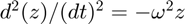
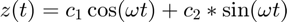
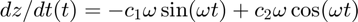
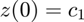
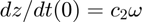
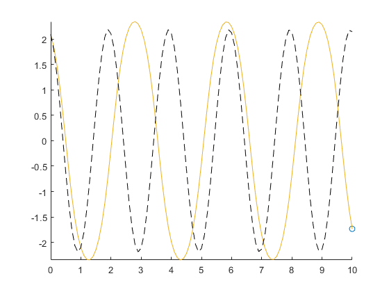
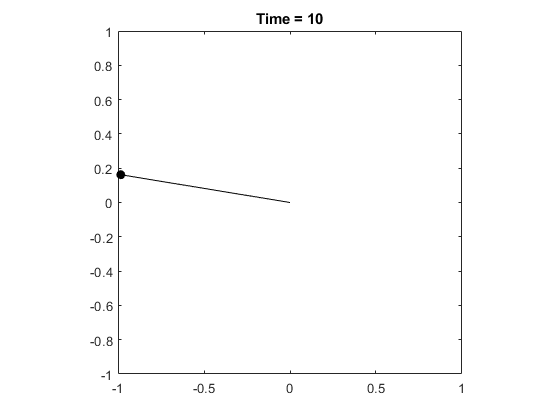
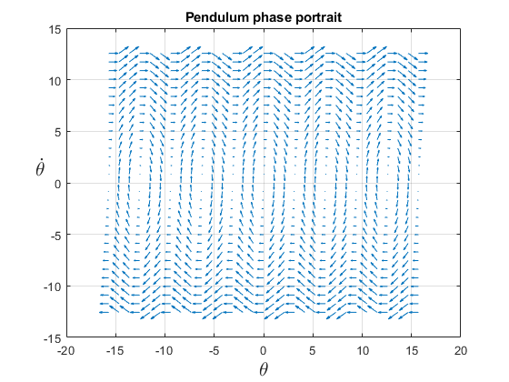
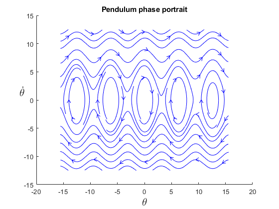

Pendulum
Contents
Constants and initial conditions
g = 9.81;
L = 1;
omega = sqrt(g/L);
z_0 = [4*pi/6; -2];
% z_0 = [.1; .1];
Numerical solution
The numerical solution of  for the time span [0, T]
T = 10; tspan = linspace(0, T, 101); [t, z] = ode45(@(t, z) pendulum_system(t, z, omega), tspan, z_0); theta = z(:, 1);
Approximate solution




c1 = z_0(1); c2 = z_0(2)/omega;
Visualization
The pendulum angle as a function of time
figure(1); comet(t, theta); hold on; plot(t, c1*cos(omega*t) + c2*sin(omega*t), '--k') hold off
The pendulum position as a function of time
x_pos = sin(theta); y_pos = -cos(theta); figure(2); for k = 1 : length(t) plot(L*x_pos(k), L*y_pos(k), 'ok', 'MarkerFaceColor', 'k'); hold on; line([0 L*x_pos(k)], [0 L*y_pos(k)], 'Color', 'k'); hold off; title(['Time = ' num2str(t(k))]); axis equal; axis([-L, L, -L, L]); drawnow; end
Phase portrait
[z_1, z_2] = meshgrid(linspace(-5*pi, 5*pi, 31), linspace(-4*pi, 4*pi, 31)); dz_1 = z_2; dz_2 = -omega^2*sin(z_1); % Quiver plot figure(3); quiver(z_1, z_2, dz_1, dz_2); grid on; xlabel('$\theta$', 'Interpreter', 'latex', 'FontSize', 16); ylabel('$\dot{\theta}$', 'Interpreter', 'latex', 'FontSize', 16, 'Rotation', 0); title('Pendulum phase portrait'); % Stream slice plot (trajectories) figure(4); streamslice(z_1, z_2, dz_1, dz_2); xlabel('$\theta$', 'Interpreter', 'latex', 'FontSize', 16); ylabel('$\dot{\theta}$', 'Interpreter', 'latex', 'FontSize', 16, 'Rotation', 0); title('Pendulum phase portrait'); 